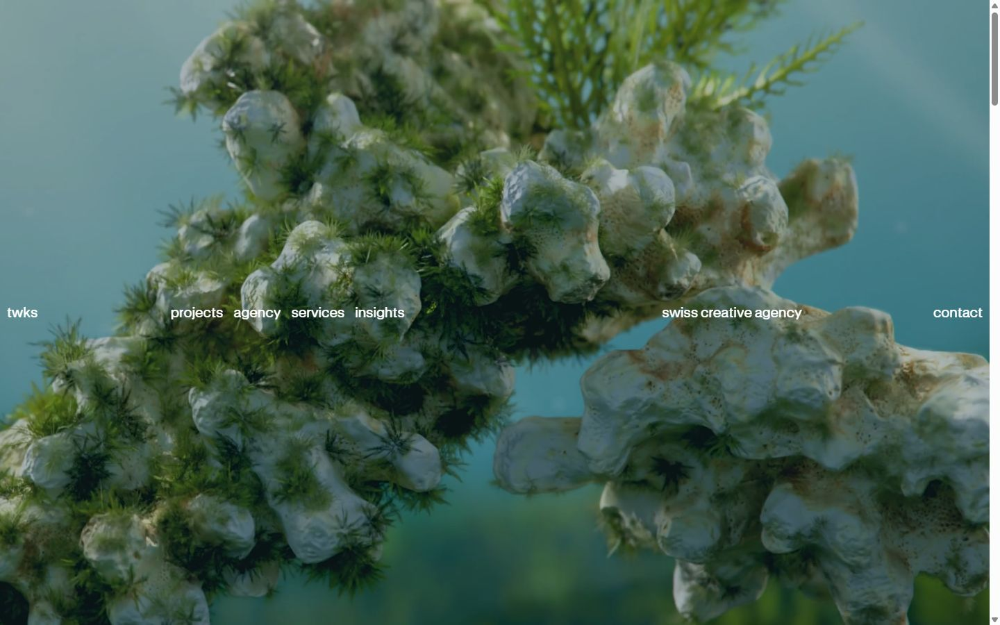
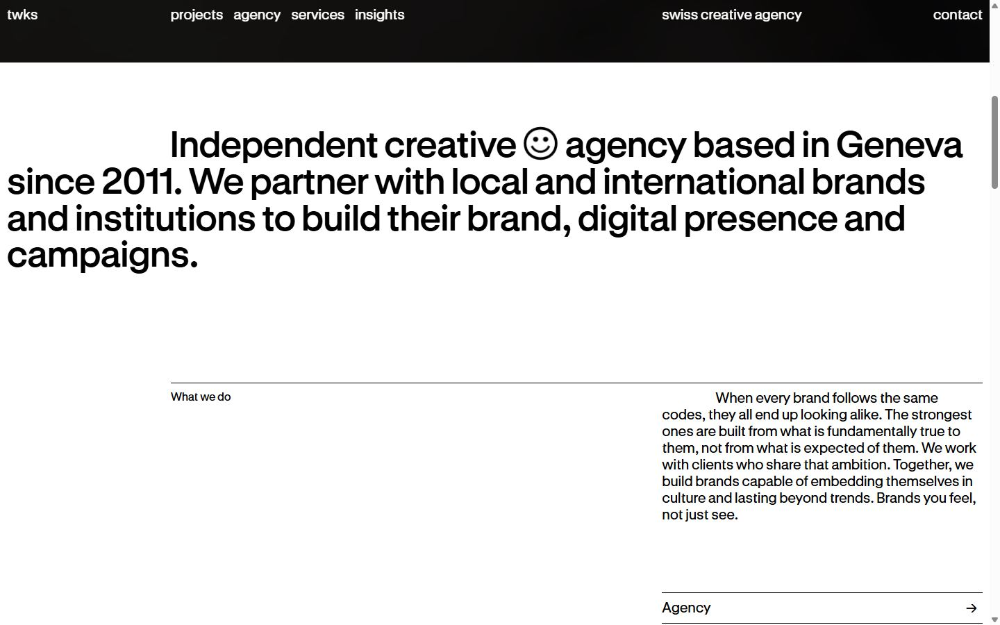
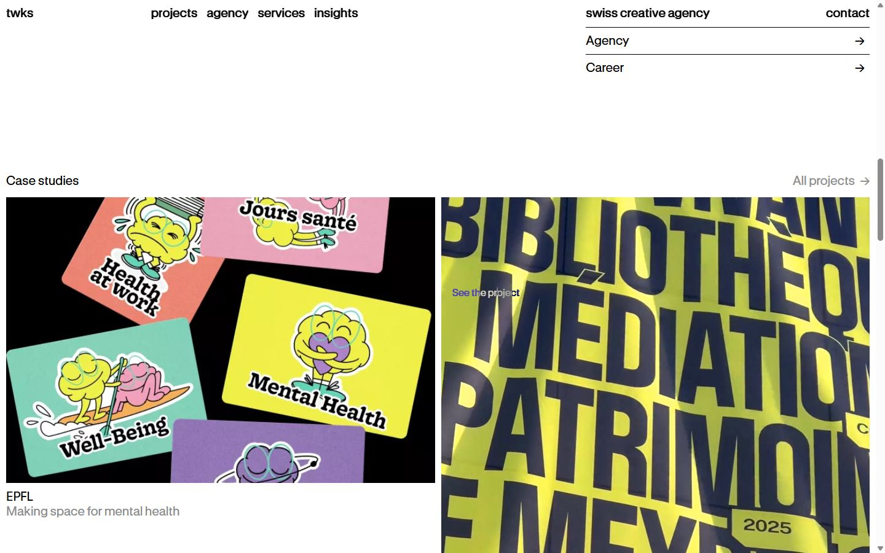
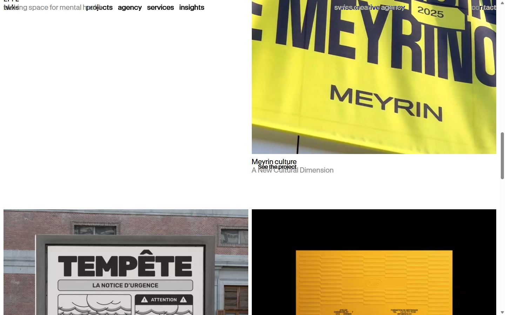
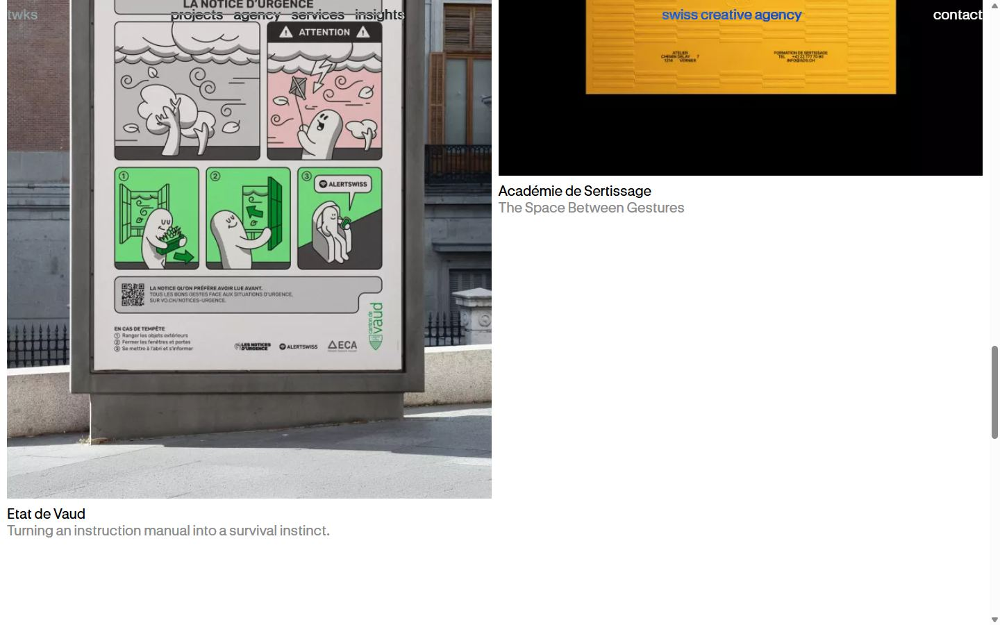
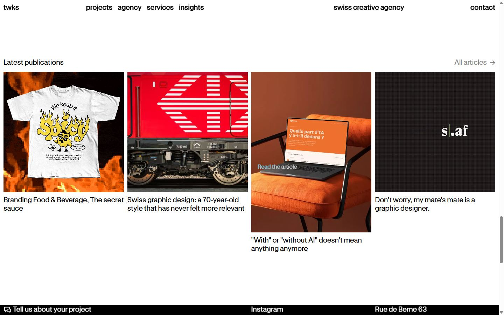
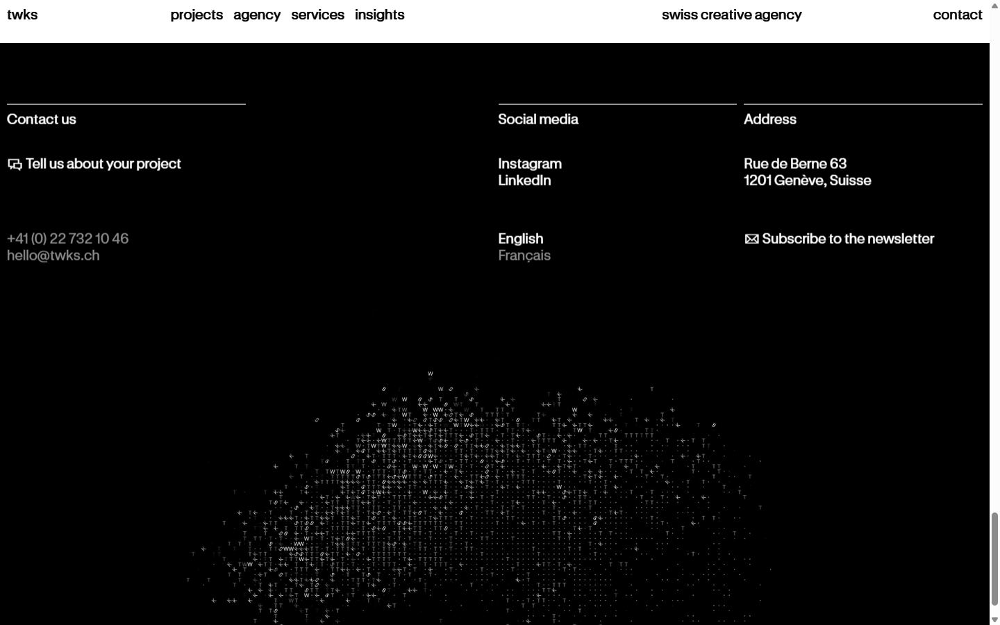
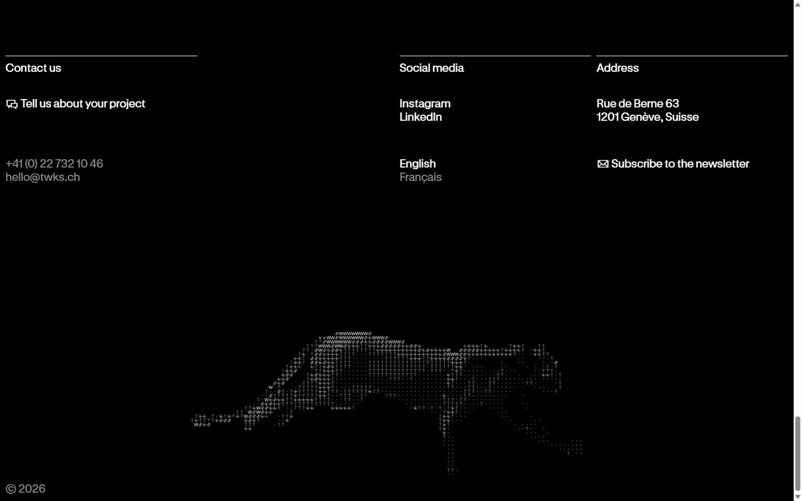
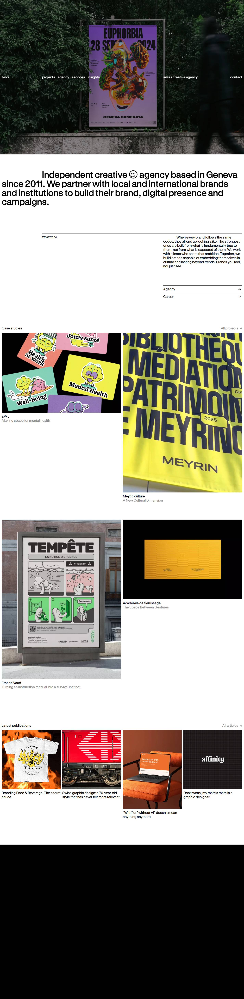

twks
Captures desktop










Pages internes
Mobile
Stack détectée
Alpine.js, GSAP, Lenis, Lottie, React Three Fiber, ScrollTrigger, Virtual scroll
Versions : GSAP 3.11.0 · Three.js r?
Design tokens
Couleurs (fonds, pondérées par surface)
#ffffff · #000000
Couleurs de texte
#000000 · #ffffff · #8c8c8c
Polices utilisées (par volume de texte)
GT Standard
Fichiers de police chargés
Typographie
| Élément | Police | Taille | Graisse | Interligne | Interlettrage | Casse |
|---|---|---|---|---|---|---|
| h1 | "GT Standard", ui-sans-serif, system-ui, sans-seri | 52.8px | 600 | 52.8px | -0.528px | none |
| h2 | "GT Standard", ui-sans-serif, system-ui, sans-seri | 20px | 400 | 24px | 0.2px | none |
| h3 | "GT Standard", ui-sans-serif, system-ui, sans-seri | 20px | 400 | 24px | 0.2px | none |
| p | "GT Standard", ui-sans-serif, system-ui, sans-seri | 16px | 400 | 19.2px | 0.16px | none |
| a | "GT Standard", ui-sans-serif, system-ui, sans-seri | 20px | 400 | 24px | 0.2px | lowercase |
| button | "GT Standard", ui-sans-serif, system-ui, sans-seri | 20px | 400 | 24px | 0.2px | lowercase |
| li | "GT Standard", ui-sans-serif, system-ui, sans-seri | 20px | 400 | 24px | 0.2px | none |
| body | "GT Standard", ui-sans-serif, system-ui, sans-seri | 20px | 400 | 24px | 0.2px | none |
Échelle des tailles de texte
20px (131) · 16px (26) · 60px (7) · 22px (2) · 52.8px (2)
Arrondis
aucun (angles droits)
Transitions CSS fréquentes
Points de rupture (media queries)
64rem · 48rem · 120.063rem · 40rem · 80rem · 96rem · 1220px · 600px · 500px · 350px · 1800px · 44rem
Animations CSS (@keyframes)
marquee, spin, pulse
Variables CSS (:root)
--font-sans: "GT Standard",ui-sans-serif,system-ui,sans-serif,"Apple Color Emoji","Segoe UI Emoji","Segoe UI Symbol","Noto Color Emoji"; --font-serif: ui-serif,Georgia,Cambria,"Times New Roman",Times,serif; --font-mono: ui-monospace,SFMono-Regular,Menlo,Monaco,Consolas,"Liberation Mono","Courier New",monospace; --color-red-50: oklch(97.1% .013 17.38); --color-red-100: oklch(93.6% .032 17.717); --color-red-200: oklch(88.5% .062 18.334); --color-red-300: oklch(80.8% .114 19.571); --color-red-400: oklch(70.4% .191 22.216); --color-red-500: oklch(63.7% .237 25.331); --color-red-600: oklch(57.7% .245 27.325); --color-red-700: oklch(50.5% .213 27.518); --color-red-800: oklch(44.4% .177 26.899); --color-red-900: oklch(39.6% .141 25.723); --color-red-950: oklch(25.8% .092 26.042); --color-orange-50: oklch(98% .016 73.684); --color-orange-100: oklch(95.4% .038 75.164); --color-orange-200: oklch(90.1% .076 70.697); --color-orange-300: oklch(83.7% .128 66.29); --color-orange-400: oklch(75% .183 55.934); --color-orange-500: oklch(70.5% .213 47.604); --color-orange-600: oklch(64.6% .222 41.116); --color-orange-700: oklch(55.3% .195 38.402); --color-orange-800: oklch(47% .157 37.304); --color-orange-900: oklch(40.8% .123 38.172); --color-orange-950: oklch(26.6% .079 36.259); --color-amber-50: oklch(98.7% .022 95.277); --color-amber-100: oklch(96.2% .059 95.617); --color-amber-200: oklch(92.4% .12 95.746); --color-amber-300: oklch(87.9% .169 91.605); --color-amber-400: oklch(82.8% .189 84.429); --color-amber-500: oklch(76.9% .188 70.08); --color-amber-600: oklch(66.6% .179 58.318); --color-amber-700: oklch(55.5% .163 48.998); --color-amber-800: oklch(47.3% .137 46.201); --color-amber-900: oklch(41.4% .112 45.904); --color-amber-950: oklch(27.9% .077 45.635); --color-yellow-50: oklch(98.7% .026 102.212); --color-yellow-100: oklch(97.3% .071 103.193); --color-yellow-200: oklch(94.5% .129 101.54); --color-yellow-300: oklch(90.5% .182 98.111); --color-yellow-400: oklch(85.2% .199 91.936); --color-yellow-500: oklch(79.5% .184 86.047); --color-yellow-600: oklch(68.1% .162 75.834); --color-yellow-700: oklch(55.4% .135 66.442); --color-yellow-800: oklch(47.6% .114 61.907); --color-yellow-900: oklch(42.1% .095 57.708); --color-yellow-950: oklch(28.6% .066 53.813); --color-lime-50: oklch(98.6% .031 120.757); --color-lime-100: oklch(96.7% .067 122.328); --color-lime-200: oklch(93.8% .127 124.321); --color-lime-300: oklch(89.7% .196 126.665); --color-lime-400: oklch(84.1% .238 128.85); --color-lime-500: oklch(76.8% .233 130.85); --color-lime-600: oklch(64.8% .2 131.684); --color-lime-700: oklch(53.2% .157 131.589); --color-lime-800: oklch(45.3% .124 130.933); --color-lime-900: oklch(40.5% .101 131.063); --color-lime-950: oklch(27.4% .072 132.109); --color-green-50: oklch(98.2% .018 155.826); --color-green-100: oklch(96.2% .044 156.743); --color-green-200: oklch(92.5% .084 155.995); --color-green-300: oklch(87.1% .15 154.449); --color-green-400: oklch(79.2% .209 151.711); --color-green-500: oklch(72.3% .219 149.579); --color-green-600: oklch(62.7% .194 149.214); --color-green-700: oklch(52.7% .154 150.069); --color-green-800: oklch(44.8% .119 151.328); --color-green-900: oklch(39.3% .095 152.535); --color-green-950: oklch(26.6% .065 152.934); --color-emerald-50: oklch(97.9% .021 166.113); --color-emerald-100: oklch(95% .052 163.051); --color-emerald-200: oklch(90.5% .093 164.15); --color-emerald-300: oklch(84.5% .143 164.978); --color-emerald-400: oklch(76.5% .177 163.223); --color-emerald-500: oklch(69.6% .17 162.48); --color-emerald-600: oklch(59.6% .145 163.225); --color-emerald-700: oklch(50.8% .118 165.612); --color-emerald-800: oklch(43.2% .095 166.913); --color-emerald-900: oklch(37.8% .077 168.94); --color-emerald-950: oklch(26.2% .051 172.552);
Structure de la home
Hauteur : 5822 px — 727 nœuds DOM — canvas 0, vidéos 8, images 23
| # | Bloc | Hauteur | Titre | Médias |
|---|---|---|---|---|
| 1 | section .relative w-full h-svh overflow-hidden bg | 900 | 26 | |
| 2 | section .px-base text-big [&_p]:indent-1/6 pt-20 | 301 | Creative communications agency in Geneva | 0 |
| 3 | section .px-base grid grid-cols-6 gap-x-2.5 mb-20 | 202 | 0 | |
| 4 | section .px-base mt-37.5 | 2115 | Case studies | 7 |
| 5 | section .px-base mt-50 | 555 | Latest publications | 6 |
Navigation : twks · Projects · Agency · Branding · Campaign · Digital · Insights · Projects · Agency · Branding · Campaign · Digital · Insights · Français · twks Vol.4 - Golden Hour Frequencies · twks Vol.4 - Golden Hour Frequencies · +41 (0) 22 732 10 46 · hello@twks.ch · Instagram · LinkedIn · Rue de Berne 63 1201 Genève, Suisse
Boutons / CTA :
SEO
Plan des titres
Performance (mesure locale, Chrome headless, connexion non bridée)
Mobile
Fichiers
captures/ : arrivée, scroll desktop (1440×900), pleine page, pages internes, mobile (390×844 @2x) ; vidéo de scroll dans la release GitHub « videos » (lien en haut de fiche)page.html : DOM rendu · styles.css : CSS chargé · scripts/ : JS chargé (index dans _index.json) · shaders.glsl : shaders extraits · rea-bundle.json : analyse REA du bundle (chunks, routes, endpoints)